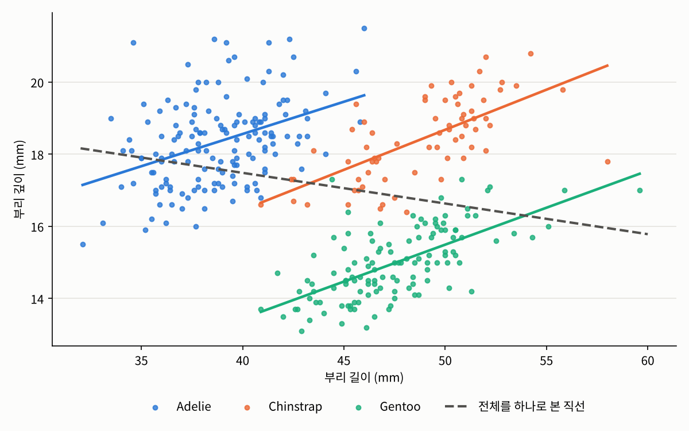

4.4 상관과 인과, 심슨의 역설
4장 두 변수 사이의 관계 · 함께 움직인다는 것의 의미
들어가며
지난 두 글에서는 두 변수가 함께 움직이는 정도를 상관계수로 쟀습니다. 이번 글에서는 한 걸음 물러서서, 그 숫자를 어떻게 해석해야 하는지를 다룹니다.
먼저 “상관관계는 인과관계가 아니다”라는 유명한 말이 정확히 무슨 뜻인지, 상관이 생기는 여러 이유를 나누어 정리합니다. 그다음 그 극단적인 경우로, 데이터를 하나로 합쳐서 보느냐 집단별로 나누어 보느냐에 따라 관계의 방향이 정반대로 뒤집히는 심슨의 역설을 수치형 데이터와 분할표 데이터에서 각각 살펴보겠습니다.
상관관계는 인과관계가 아닙니다
두 변수 \(X\)와 \(Y\) 사이에 강한 상관이 있다고 해 보겠습니다. 이때 가장 먼저 떠오르는 해석은 “\(X\)가 \(Y\)를 일으킨다”는 것입니다. 하지만 같은 상관은 전혀 다른 여러 이유로도 생길 수 있습니다.
1. 숨은 공통 원인(교란 변수). 1.3의 비타민 시뮬레이션에서, 비타민은 건강에 아무 효과가 없었지만 비타민을 먹는 사람이 더 건강하게 나왔습니다. “건강에 대한 관심”이라는 교란 변수가 비타민 복용과 건강 둘 다에 영향을 주었기 때문입니다. 아이스크림 판매량과 물놀이 사고 건수가 함께 오르내리는 것도, 아이스크림이 사고를 일으켜서가 아니라 더운 날씨가 둘 다를 늘리기 때문입니다.
2. 방향이 반대인 인과(역인과). 운동을 적게 하는 노인일수록 건강이 나쁘다는 상관이 있다면, 운동 부족이 건강을 해친 것일 수도 있지만 건강이 나빠서 운동을 못 하는 것일 수도 있습니다. 상관계수는 방향을 알려 주지 않습니다. \(X\)와 \(Y\)의 상관계수는 \(Y\)와 \(X\)의 상관계수와 똑같으니까요.
3. 우연. 변수가 아주 많으면, 아무 관계없는 변수 쌍 중에서도 우연히 상관이 높게 나오는 쌍이 반드시 생깁니다. 어떤 나라의 연도별 치즈 소비량과 어떤 직업의 연도별 종사자 수처럼, 둘 다 해마다 꾸준히 늘기만 한 두 변수는 아무 관계가 없어도 상관계수가 높게 나옵니다. 많은 변수 쌍을 뒤져 상관이 높은 것만 골라 보고하는 것이 왜 위험한지는 8장의 다중 검정에서 다시 다룹니다.
4. 진짜 인과. 물론 상관이 실제로 인과를 반영하는 경우도 있습니다. 문제는 상관계수 숫자만으로는 이 네 가지를 구분할 수 없다는 것입니다. 구분하려면 데이터가 어떻게 모였는지, 어떤 변수가 빠져 있는지를 따져 봐야 합니다. 1.3에서 본 것처럼, 연구자가 원인을 무작위로 배정한 실험이라면 1번과 2번의 가능성을 막을 수 있습니다.
펭귄의 부리: 합치면 뒤집힙니다
4.2의 상관행렬에서 부리 깊이가 다른 변수들과 모두 음의 상관을 보인다는 수상한 결과가 있었습니다. 그중 부리 길이와 부리 깊이의 관계를 자세히 보겠습니다.
import numpy as np
import seaborn as sns
penguins = sns.load_dataset("penguins").dropna(subset=["bill_length_mm", "bill_depth_mm"])
x, y = penguins["bill_length_mm"], penguins["bill_depth_mm"]
print(f"전체 ({len(penguins)}마리) : 상관계수 {x.corr(y):+.3f}")
for species, d in penguins.groupby("species"):
print(f"{species:9s} ({len(d):3d}마리): 상관계수 {d.bill_length_mm.corr(d.bill_depth_mm):+.3f}")전체 (342마리) : 상관계수 -0.235
Adelie (151마리): 상관계수 +0.391
Chinstrap ( 68마리): 상관계수 +0.654
Gentoo (123마리): 상관계수 +0.643펭귄 전체를 하나로 보면 부리가 길수록 부리가 얕은 음의 상관(\(-0.235\))이 있습니다. 그런데 종별로 나누어 보면 세 종 모두에서 부리가 길수록 부리가 깊은 양의 상관이 있습니다. 세 종 모두에서 양수인데, 합치니 음수가 된 것입니다. 그림을 보면 이유가 분명해집니다.

각 종의 점들은 저마다 오른쪽 위로 올라가는 무리를 이룹니다. 그런데 세 무리의 위치가 다릅니다. 아델리펭귄은 부리가 짧고 깊은 왼쪽 위에, 젠투펭귄은 부리가 길고 얕은 오른쪽 아래에 있습니다. 세 무리를 하나로 합쳐 직선을 그으면, 무리 안의 경향이 아니라 무리와 무리 사이의 배치를 따라 오른쪽 아래로 내려가는 직선이 됩니다. 실제로 종별 평균을 보면 아델리펭귄의 부리는 평균 38.8mm 길이에 18.3mm 깊이, 젠투펭귄은 47.5mm 길이에 15.0mm 깊이입니다.
여기서 종은 부리 길이와 부리 깊이 둘 다에 영향을 주는 변수, 즉 교란 변수입니다. 4.2의 상관행렬에서 부리 깊이와 몸무게의 상관이 \(-0.472\)였던 것도 같은 이유입니다. 종별로 나누어 계산하면 이 상관계수는 아델리펭귄 0.576, 턱끈펭귄 0.604, 젠투펭귄 0.719로 모두 양수가 됩니다. 같은 종 안에서는 부리가 깊은 펭귄이 대체로 더 무겁지만, 덩치 큰 젠투펭귄의 부리가 유난히 얕아서 전체로 보면 음의 상관이 나타난 것입니다.
이렇게 집단별로는 성립하는 관계가 집단을 합치면 사라지거나 반대 방향이 되는 현상을 심슨의 역설(Simpson’s paradox)이라고 합니다. 통계학자 에드워드 심슨(Edward H. Simpson)의 1951년 논문에서 이름을 따왔지만, 그보다 앞서 칼 피어슨과 우드니 율(Udny Yule)도 비슷한 현상을 지적한 바 있습니다.1
신장 결석 치료: 분할표에서의 역설
심슨의 역설은 분할표에서도 일어납니다. 1986년 영국에서 신장 결석 치료법들의 성공률을 비교한 연구가 있습니다.2 그중 개복 수술(아래 표의 A)과 피부를 작게 절개해 내시경으로 결석을 꺼내는 경피적 신쇄석술(B)의 성공 횟수를 결석 크기별로 정리하면 다음과 같습니다.3
import pandas as pd
# 신장 결석 치료 성공 횟수 / 환자 수
data = pd.DataFrame({
"결석 크기": ["작은 결석", "작은 결석", "큰 결석", "큰 결석"],
"치료법": ["A", "B", "A", "B"],
"성공": [81, 234, 192, 55],
"환자": [87, 270, 263, 80],
})
by_size = data.assign(성공률=(data["성공"] / data["환자"]).round(3))
print(by_size.to_string(index=False))
total = data.groupby("치료법")[["성공", "환자"]].sum()
total["성공률"] = (total["성공"] / total["환자"]).round(3)
print(total)결석 크기 치료법 성공 환자 성공률
작은 결석 A 81 87 0.931
작은 결석 B 234 270 0.867
큰 결석 A 192 263 0.730
큰 결석 B 55 80 0.688
성공 환자 성공률
치료법
A 273 350 0.780
B 289 350 0.826결석 크기별로 보면 작은 결석에서도, 큰 결석에서도 A의 성공률이 더 높습니다(93.1% 대 86.7%, 73.0% 대 68.8%). 그런데 결석 크기를 무시하고 합치면 B의 성공률이 더 높습니다(78.0% 대 82.6%). 어느 쪽이 더 나은 치료법일까요?
비밀은 누가 어떤 치료를 받았는가에 있습니다. A를 받은 350명 중 263명(75%)은 치료가 어려운 큰 결석 환자였고, B를 받은 350명 중 270명(77%)은 치료가 쉬운 작은 결석 환자였습니다. A는 어려운 환자를 많이 맡았기 때문에, 크기별로는 더 잘했는데도 전체 성공률이 낮게 나온 것입니다. 여기서 결석 크기는 어떤 치료를 받을지와 치료가 성공할지 둘 다에 영향을 주는 교란 변수입니다. 원래 연구는 두 치료법을 서로 다른 시기의 환자들에게 쓴 기록을 비교한 것으로, 환자를 무작위로 배정한 실험이 아니었습니다.
4.1의 언어로 말하면, 이 데이터는 치료법 × 결석 크기 × 성공 여부의 3차원 분할표입니다. 결석 크기를 무시하고 합친 2차원 분할표는 결석 크기라는 정보를 잃어버려서, 교란 변수의 효과가 치료법의 효과인 것처럼 보이게 만들었습니다.
그러면 언제 나누고 언제 합쳐야 할까요?
두 예에서는 집단별로 나누어 본 결과가 더 그럴듯했습니다. 종이 다른 펭귄은 애초에 다른 체형을 가졌고, 결석 크기는 치료 결과에 큰 영향을 주니까요. 그렇다면 항상 나누어 보면 될까요?
꼭 그렇지는 않습니다. 나누는 기준이 되는 변수가 원인보다 먼저 정해진 교란 변수라면(결석 크기는 치료법을 고르기 전에 이미 정해져 있습니다) 나누어 보는 것이 맞습니다. 하지만 그 변수가 원인의 결과로 생긴 변수라면, 그 변수로 나누는 것이 오히려 진짜 효과를 가릴 수 있습니다. 예를 들어 어떤 약이 혈압을 낮춰서 심장병을 예방한다면, “혈압이 같은 사람들끼리” 나누어 비교하면 약의 효과가 사라져 보일 것입니다. 약이 효과를 내는 바로 그 경로를 막아 버렸기 때문입니다.
결국 어느 쪽이 맞는지는 데이터만으로는 정할 수 없고, 변수들 사이의 인과 구조에 대한 지식이 필요합니다. 이것을 체계적으로 다루는 분야가 1.3에서 소개한 인과 추론입니다. 이 과목에서 기억해 둘 교훈은 다음 세 가지입니다.
- 상관이 보이면 “이 둘에 함께 영향을 줄 수 있는 다른 변수는 없는가?”를 먼저 묻습니다.
- 데이터에 집단을 나누는 변수(종, 성별, 지역, 시기 등)가 있다면, 합친 결과와 나눈 결과를 둘 다 봅니다. 둘이 크게 다르다면 그 변수가 교란 변수일 가능성이 높습니다.
- 원인을 무작위로 배정한 실험은 교란 변수와 원인의 연결을 끊어 주므로, 인과에 대한 가장 확실한 근거가 됩니다.
정리
이번 글에서는 두 변수의 관계를 해석할 때의 함정을 다루었습니다.
- 상관관계는 교란 변수, 역인과, 우연, 그리고 진짜 인과 중 어느 것으로도 생길 수 있고, 상관계수만으로는 이를 구분할 수 없습니다.
- 집단별로 성립하는 관계가 집단을 합치면 사라지거나 뒤집히는 현상을 심슨의 역설이라고 합니다. 펭귄의 부리 길이와 깊이는 종별로는 양의 상관, 합치면 음의 상관을 보였습니다.
- 신장 결석 치료에서는 크기별로는 A가, 합치면 B가 더 나아 보였습니다. 결석 크기가 치료법 선택과 치료 결과 둘 다에 영향을 준 교란 변수였기 때문입니다.
- 나누어 볼지 합쳐 볼지는 인과 구조에 대한 지식으로 정해야 하며, 무작위 실험은 교란 변수의 영향을 끊는 가장 확실한 방법입니다.
지금까지 두 변수의 관계를 재고 해석했습니다. 마지막으로, 그 관계를 실제로 쓰는 방법을 보겠습니다. 날개 길이를 알면 몸무게를 얼마로 예측해야 할까요? 다음 글에서는 산점도의 점들을 가장 잘 요약하는 직선을 구해 보겠습니다.
연결되는 개념
- \(\leftarrow\) 이전 개념: 4.3 순위 상관
- \(\rightarrow\) 다음 개념: 4.5 최소제곱 직선
Footnotes
E. H. Simpson, “The Interpretation of Interaction in Contingency Tables”, Journal of the Royal Statistical Society: Series B 13(2), 1951, pp. 238–241. 그보다 앞선 지적으로는 G. U. Yule, “Notes on the Theory of Association of Attributes in Statistics”, Biometrika 2(2), 1903, pp. 121–134가 있습니다.↩︎
C. R. Charig, D. R. Webb, S. R. Payne & J. E. Wickham, “Comparison of Treatment of Renal Calculi by Open Surgery, Percutaneous Nephrolithotomy, and Extracorporeal Shockwave Lithotripsy”, British Medical Journal 292(6524), 1986, pp. 879–882.↩︎
이 데이터를 심슨의 역설의 예로 소개한 글은 S. A. Julious & M. A. Mullee, “Confounding and Simpson’s Paradox”, BMJ 309(6967), 1994, pp. 1480–1481입니다. 결석 크기는 지름 2cm를 기준으로 나누었습니다.↩︎